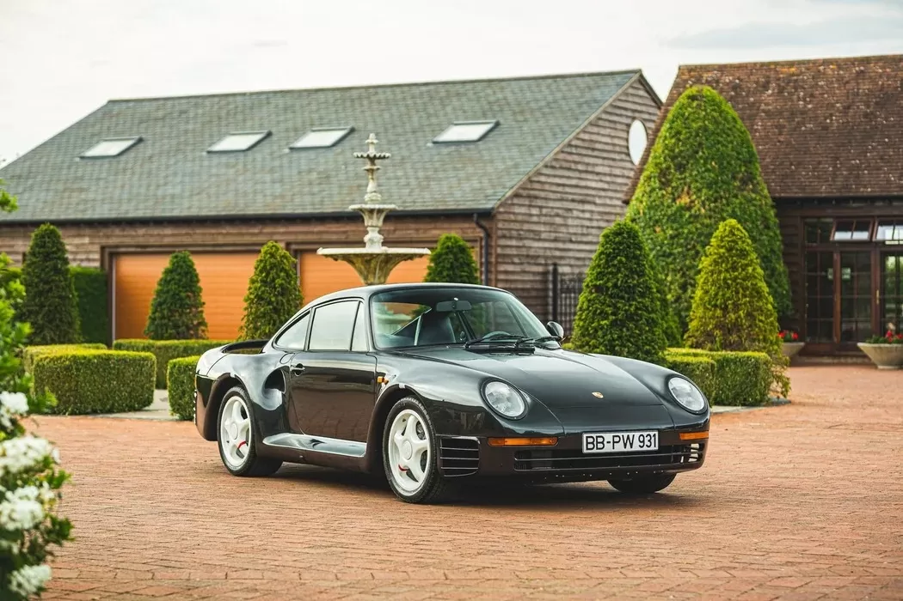

The Porsche 959 is a sports car manufactured by German automobile manufacturer Porsche from 1986 to 1993, first as a Group B rally car and later as a road legal production car designed to satisfy FIA homologation regulations requiring at least 200 units be produced. The twin-turbocharged 959 was the world's fastest street-legal production car when introduced, achieving a top speed of 317 km/h (197 mph), with some variants even capable of achieving 339 km/h (211 mph). Combining race-car performance with luxury-sedan comfort and everyday drivability in dry, wet and snowy conditions, it was considered the most technologically advanced road car of its time. After the successful introduction of all-wheel drive on more rally-specific cars like the Audi Quattro, it was one of the first pure high-performance sports-cars with all-wheel drive, providing the basis for Porsche's first all-wheel drive 911 Carrera 4 model. Its performance convinced Porsche executives to make all-wheel drive standard on all turbocharged versions of the 911 starting with the 993. The twin-turbo system used on the 959 also made its way to future turbocharged Porsche sports cars. In 2004, Sports Car International named the 959 number one on its list of Top Sports Cars of the 1980s.
